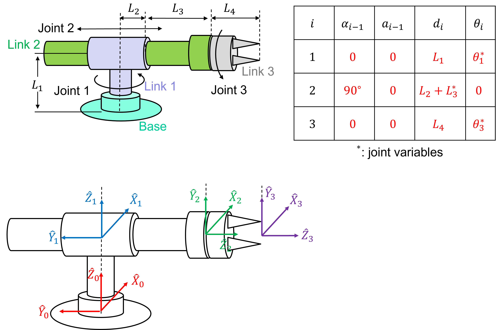
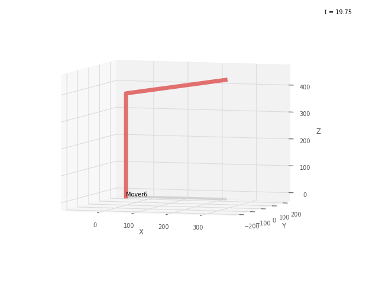

❄️ ICE5: Robotics Toolbox#
A note on this document
This document is known as a Jupyter notebook; it is used in academia and industry to allow text and executable code to coexist in a very easy to read format. Blocks can contain text or executable code. To run the executable code in this notebook, click  . For blocks containing code, press
. For blocks containing code, press Shift + Enter, Ctrl+Enter, or click the arrow on the block to run the code. Earlier blocks of code need to be run for the later blocks of code to work.
Caution
Interactive matplotlib figures do not seem to work properly in jupyter notebook and Google Colab. It is strongly recommened to run the code in PyCharm.
# import robotics toolbox.
# if you get an error, you need to install roboticstoolbox-python
import roboticstoolbox as rtb
If you fail importing roboticstoolbox, you need to uncomment the following line to install the roboticstoolbox-python package.
#!pip install roboticstoolbox-python # delete "#" and run it.
A revolute joint and link can be created by
import roboticstoolbox as rtb
link = rtb.RevoluteMDH(a=1)
print(link)
RevoluteMDH: θ=q, d=0.0, a=1, ⍺=0.0
which is a RevoluteMDH object which is a subclass of the generic DHLink object. The displayed value of the object shows the kinematic parameters (most of which have defaulted to zero), the joint type and the modified Denavit-Hartenberg (MDH) convention is used (the tag RevoluteMDH).
A Link object has many parameters and methods which are described in the documentation in https://petercorke.github.io/robotics-toolbox-python/intro.html#robotics-toolbox petercorke/robotics-toolbox-python
The link transform for \(\theta=\pi/2\) rad is
from numpy import pi
link.A(pi/2) # forward kinematics - pose of the link
0 -1 0 1
1 0 0 0
0 0 1 0
0 0 0 1
representing the homogeneous transformation due to this robot link with the particular value of \(\theta\). Various link parameters can be read or altered, for example,
link.isprismatic
False
link.isrevolute
True
indicate that the link is revolute and
link.a
1
returns the link length, \(a\). Finally a link can contain an offset
link.offset = pi/4
link.A(pi/4)
0 -1 0 1
1 0 0 0
0 0 1 0
0 0 0 1
which is added to the joint variable before computing the link transformation. The joint coordinate offset provides a mechanism to set an arbitrary configuration for the zero joint coordinate case. The offset is added to the user specified joint angle before any kinematic or dynamic function is invoked.
Shown below is the 3 DoF revolute-prismatic-revolute (RPR) robotic arm we discussed in Lesson 19.
{kind=link}
Suppse \(L_1 = L_2 = L_3 = 1\).
L1 = 1
L2 = 1
L3 = 1
RPR = rtb.robot.DHRobot(
[
rtb.RevoluteMDH(d=L1),
rtb.PrismaticMDH(alpha=pi/2, offset=L2),
rtb.RevoluteMDH(d=L3)
], name='RPR')
print(RPR)
DHRobot: RPR, 3 joints (RPR), dynamics, modified DH parameters
┌─────┬───────┬──────┬─────────┐
│aⱼ₋₁ │ ⍺ⱼ₋₁ │ θⱼ │ dⱼ │
├─────┼───────┼──────┼─────────┤
│ 0.0 │ 0.0° │ q1 │ 1 │
│ 0.0 │ 90.0° │ 0.0° │ q2 + 1 │
│ 0.0 │ 0.0° │ q3 │ 1 │
└─────┴───────┴──────┴─────────┘
┌─┬──┐
└─┴──┘
We can now perform standard kinematic operations
qz = [0, 0, 0] # zero angle configuration
T = RPR.fkine(qz)
print(T)
1 0 0 0
0 0 -1 -2
0 1 0 1
0 0 0 1
We can generate plots using the plot method, for example
# Note: this is for jupyter-book & jupyter-lab.
# If figures are not correctly displayed in this doc,
# "%matplotlib widget" may need to be added
# If it throws anerror after adding %matplotlib widget,
# run "pip install --upgrade jupyterlab ipympl"
# %matplotlib notebook
# %matplotlib inline
%matplotlib inline
import matplotlib.pyplot as plt
RPR.plot(qz, block=True) # It may not display correctly
plt.show()
which shows a skeleton of the robot with pipes that connect the link coordinate frames as defined by the Denavit-Hartenberg parameters. The plot method has many options for showing the joint axes, wrist coordinate frame, shadows and so on. Also. we can rotate the figure by holding down the left mouse button.
We can also animate as the robot moves along multiple configurations. Let’s animate the path from the qz to q1 given by
q1 = [pi/2, 1, 0]
qt = rtb.jtraj(qz, q1, 50) # 50 steps
RPR.plot(qt.q, block=True) # qt.q is the trajectory from qz to q1 # It may not display correctly
Shown below is the 3 DoF revolute-revolute-revolute (RRR) robotic arm we discussed in Lesson 19.

Suppse \(L_1 = 0.2\), \( L_2 = 1\) and \(L_3 = 0.8\).
from spatialmath import *
L1 = 0.2
L2 = 1
L3 = 0.8
RRR = rtb.robot.DHRobot(
[ rtb.RevoluteMDH(d=L1),
rtb.RevoluteMDH(alpha=pi/2),
rtb.RevoluteMDH(a=L2)
], name='RRR', RRR.tool = SE3.Tx(L3))
print(RRR)
print(RRR.tool)
where the tool tip position (origin of Frame {4}) with repect to Frame {3} is (L3, 0, 0), which is an extension by L3 in the x-direction of Frame {3}.
Forward kinematics can be computed to find the pose of the tool tip as before
qz = [0, 0, 0] # zero angle configuration
T = RRR.fkine(qz)
print(T)
T.printline()
This returns the homogeneous transformation corresponding to the end-effector pose \((𝑅, \mathbf{t})\), where $\(R = \begin{bmatrix} 1 & 0 & 0 \\ 0 & 0 & -1 \\ 0 & 1 & 0\end{bmatrix}\)$ represents the orientation of the tool tip and
represents the position of the tool tip.
We can find the roll-pitch-yaw angles of the tool tip relative to Frame {0} by
T.rpy('deg')
which is a \(90^\circ\) rotaion about the \(\hat{X}_0\)-axis.
We can generate a plot
import matplotlib.pyplot as plt
RRR.plot(qz, block=True) # It may not display correctly
Deliverables#
Deliverable 1#
Create a folder called ICE3 in your repository. Write a Python script that constrcuts an instance of DHRobot for the robot shown below.
{kind=link}
Find the forword kinematics for the following configurations of (\(\theta_1, \theta_2, \theta_3, \theta_4, \theta_5, \theta_6\)).
a. (0, 0, 0, 0, 0, 0)
b. (0, 0, 90, 0, -90, 0)
c. (0, 90, 90, 0, -90, 0)
d. (90, 90, 90, 0, -90, 0)
e. (90, 90, -90, 0, -90, 0)
f. (90, 90, -90, 90, -90, -90)
Use the following values for the link lengths:
# link length in mm.
L1 = 193
L2 = 190
L3 = 60
L4 = 290
L5 = 75
L6 = 70
For each configuration, provide
Euler angles (rpy) and position of the tool tip.
plot as shown below.
For (\(\theta_1, \theta_2, \theta_3, \theta_4, \theta_5, \theta_6\)) = (0, 0, 0, 0, 0, 0), the figure should be
{kind=link}
Although Joint 3 does not look like 90 degrees in the figure, it is actually 90 degrees. Apparently, the plot function cannot correctly display L3. Use the plot as a reference only and you need to look at the pose returned by fkine.
Deliverable 2#
Construct a DH table for the 5 DoF robotic arm shown below.

There are five revolute joints. Attach Frame 5 for Joint 5 at the end of the tooltip.
The link lengths are given by
B0 = 0.090
L1 = 0.010 # we will use it later, set it to 0 this time.
L2 = 0.105
L3 = 0.088
L4 = 0.170
Write a Python script that constructs an instance of DHRobot for the robot and tests the following angles.
[0, pi/2, 0, 0, 0] # rest position
[0, 0, 0, 0, 0] # zero position
[0, pi/2, -pi/2, 0, 0]
[0, pi/2, pi/2, 0, 0]
[0, pi/2, 0, -pi/2, 0]
[0, pi/2, 0, pi/2, 0]
[0, pi/2, 0, 0, -pi/2]
[0, pi/2, 0, 0, pi/2]
[-pi/2, pi/2, -pi/2, 0, -pi/2]
[pi/2, pi/2, pi/2, 0, pi/2]